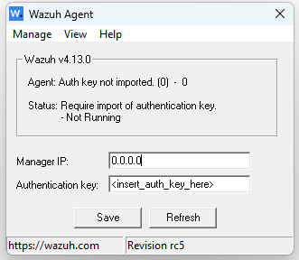

Workshop · 2 Sesi · ±3,5 jam (dengan istirahat)
Sesi I: Konsep · Sesi II: Praktikum serangan + kasus nyata
SESI I (09.50–12.05)
SESI II (13.01–14.11)
Bingung kapan saja? Langsung tanya — jangan tunggu akhir sesi.
Target: paham konsepnya, bukan hafal commandnya.
Security Operations Center
Analogi: satpam + CCTV + ranger hutan 🌲
| 👁️ Monitoring | melihat log & alert terus-menerus |
| 🔍 Investigation | selidiki alert: nyata atau palsu? |
| 🚨 Response | tindakan: blokir, isolate, perbaiki |
| 📝 Documentation | catat kronologi & pelajaran |
Siklus ini berputar setiap hari, 24/7.
Hari ini kita dalami satu: Wazuh sebagai SIEM.
| L1 SOC Analyst | Monitoring & Triage: pantau alert, analisis log, buat tiket insiden, deteksi kerentanan |
| L2 SOC Analyst | Investigator: investigasi mendalam, containment, + Threat Intelligence pada perimeter keamanan |
Dua level inilah jenjang SOC Analyst resmi di Indonesia — skema sertifikasi BSSN (SKKNI).
Hari ini kita bermain peran sebagai L1 😉
L1: pantau alert → triage → perlu investigasi? → eskalasi tiket ke L2: investigasi mendalam, containment, threat intel
Triage harian L1: baca deskripsi & level → identifikasi (siapa/apa/dari mana) → bandingkan aktivitas normal → putuskan: aman (tutup) / pantau / eskalasi ke L2
Di organisasi kecil, satu orang bisa menjalankan keduanya sekaligus.
Coba jawab tanpa lihat: alur kerja L1 itu apa saja? 🤔
Security Information and Event Management
Satu tempat untuk melihat SELURUH keadaan keamanan.
Hasilnya: kejadian penting terlewat, respon lambat.
SIEM juga membantu memenuhi regulasi & audit:
Audit butuh bukti monitoring — log terpusat + alert = bukti.
Data Collection → Parsing/Normalization → Storage → Analysis → Alerting
Ingat pipeline ini — Wazuh punya padanannya untuk setiap tahap.
Versi lab kita: 4.14.7
Di lab: dashboard di https://localhost:443
📡 Agent
↓ kirim log
🏢 Manager (decoder → rules → alert)
↓ simpan alert
🗄️ Indexer
↓ tampilkan
🖥️ Dashboard → 👀 Analyst
| Data Collection | Agent |
| Parsing/Normalization | Decoder (di Manager) |
| Analysis | Rules (di Manager) |
| Storage | Indexer |
| Alerting + View | Dashboard |
Sebutkan urutannya tanpa lihat slide sebelumnya! 🙊
Agent → Manager → Indexer → Dashboard
Dan di Manager terjadi 2 hal penting: decoder & rules — materi berikutnya.
Wazuh Agent = pengumpul log
Windows
Linux
Ribuan entri… bayangkan mencarinya manual di 50 server 😅 — itulah kenapa perlu SIEM.
Dec 25 20:45:02 lab-host myapp[1234]: User 'admin' failed login from '192.168.1.100'Decoder = penerjemah
Analogi: penerjemah yang mengubah kalimat acak → data rapi.
Phase 1 — Pre-decoding
Phase 2 — Decoding
wazuh_logtest_local.html — simulator lokal di browser
🎯 Tujuan: pecah teori XML — lihat dulu "ajaib"-nya, baru bedah cara kerjanya.
✨ Fitur simulator: badge Decoded by (decoder mana yang menangkap log) · Generate Rules AI (minta token ke facilitator) · 13 sample log siap pakai · dukungan CEF/LEEF/JSON/custom decoder
⚠️ Simulator mencakup ±90% skenario pembelajaran. Fitur advanced (decoder offset lanjutan, CDB list, active response) hanya ada di Wazuh asli — gunakan wazuh-logtest di server.
🔗 URL simulator:
https://simulator.laptopexp.my.id/wazuh_logtest_local.html
Lokal (di server workshop): http://127.0.0.1:8787/wazuh_logtest_local.html
<decoder name="sshd">
<program_name>^sshd</program_name>
</decoder>
<decoder name="sshd-login">
<parent>sshd</parent>
<regex>Failed password for (\w+) from (\d+\.\d+\.\d+\.\d+)</regex>
<order>user, srcip</order>
</decoder>| program_name ^sshd | "log dari program sshd adalah milikku" |
| parent | lanjutan dari decoder sshd |
| regex | pola untuk menangkap data (\w+ = kata, \d+ = angka) |
| order | nama field hasil tangkapan, berurutan |
Hasil: user=admin, srcip=192.168.1.100 — siap dipakai rule.
💡 Bonus OS_Regex: \p = punctuation · \l/\u = lower/upper · | = alternation · matching case-insensitive
Rule = petugas penentu (aman / curiga / berbahaya)
Decoder membaca, rule memutuskan.
| id | nomor unik rule (custom: 100000–120000) |
| level | tingkat severity 0–15 |
| decoded_as | match jika decoder tertentu cocok |
| field | match nilai field hasil decoder |
| if_sid | match jika rule induk juga match |
| frequency + timeframe | deteksi kejadian BERULANG 🔁 |
<rule id="100001" level="5">
<decoded_as>sshd-login</decoded_as>
<field name="action">failed</field>
<description>SSH login failed</description>
<group>authentication_failed,sshd,</group>
</rule>Artinya: "decoder sshd-login cocok + action=failed → alert level 5"
<rule id="100002" level="10" frequency="8" timeframe="120">
<if_matched_sid>100001</if_matched_sid>
<description>SSHD brute force attempt!</description>
</rule>"8x gagal login dalam 2 menit dari IP sama → level 10!"
Inilah yang membedakan 1x salah ketik vs serangan brute force.
💡 Kurangi noise: <if_fts> = alert hanya untuk kombinasi field yang pertama kali muncul (mis. user baru pertama kali login).
| Level 0 | tidak jadi alert (hanya dicatat) |
| Level 1–3 | informasi |
| Level 4–6 | rendah |
| Level 7–9 | sedang |
| Level 10–12 | tinggi |
| Level 13–15 | kritikal |
| 1× gagal login | rendah mungkin salah ketik |
| 8× gagal dari IP sama | tinggi indikasi brute force |
| Malware aktif terdeteksi | kritikal respons segera! |
Severity = prioritas perhatian analyst.
FIM = penjaga lemari arsip 🗄️
Attacker hampir selalu meninggalkan jejak file — FIM menangkapnya.
<syscheck>
<directories realtime="yes">C:\Windows\System32</directories>
<directories realtime="yes">/etc,/bin</directories>
<registry>HKLM\SOFTWARE</registry>
</syscheck>realtime="yes" = deteksi saat itu juga, tanpa menunggu scan.
Banding: FIM & alerting = reactive (setelah kejadian).
Cukup 1 screenshot dashboard — tidak ada hands-on untuk fitur ini.
Target: Windows + Wazuh Manager (di WSL) terhubung
Cek hostname → add agent di manager → install .msi → konfigurasi GUI → verifikasi
Waktu: 20 menit · sisakan 5 menit buffer untuk masalah tak terduga
Cek nama komputer Windows (dipakai sebagai Agent name):
:: Command Prompt
hostname
:: PowerShell
$env:COMPUTERNAME
:: GUI: Win+R -> sysdm.cpl -> Computer Namecd /var/ossec/bin
sudo ./manage_agents
[A] Add new agent
Agent name: WINDOWS-PC (WAJIB = hostname Windows)
Agent IP : any (disarankan untuk lab)
[E] Extract key -> copy key
[Q] Quitany = agent boleh konek dari IP mana pun — paling mudah untuk lab.
Paste di browser (versi konsisten dengan lab):
https://packages.wazuh.com/4.x/windows/wazuh-agent-4.14.7-1.msiBuka: C:\Program Files (x86)\ossec-agent\win32ui.exe
Verifikasi service (namanya WazuhSvc):
Get-Service *wazuh* # Status: Running
Tampilan win32ui: isi Manager IP + Authentication key → Save. Status "Auth key not imported" = key belum dipaste.
Dashboard → Agents → Status: Active (green) ✅
| Tidak konek / habis edit config | Restart |
| Agent macet | Stop → Start (fresh) |
Start-Service / Stop-Service / Restart-Service -Name "WazuhSvc"
type "C:\Program Files (x86)\ossec-agent\ossec.log" # lihat logAuto-start default aktif · GUI win32ui: Overview, Management, Settings, Logs, About
| IP WSL berubah setelah reboot | cek ip addr di WSL → update server= di ossec.conf |
| Firewall blokir port 1514 | allow inbound TCP 1514 |
| Key invalid | hapus agent di manager → add baru → extract lagi |
| Status Disconnected | cek manager jalan → restart service |
| Install gagal | run as Administrator |
Buka https://localhost:443 → jelajahi menu:
Nama field yang sering dipakai:
| srcip | IP sumber |
| user | username yang terlibat |
| rule.level | tingkat severity alert |
| rule.groups | kategori rule (authentication_failed, dll) |
Contoh: srcip:192.168.1.1 · user:admin
Analist hebat = punya kumpulan query siap pakai.
Sesi II: Praktikum serangan + kasus nyata — kembali tepat waktu! ⏰
Prinsip: lebih baik 3 kasus dipahami daripada 5 terburu-buru.
Semua simulasi attack HANYA di lab milik sendiri.
Mencoba ke sistem orang lain TANPA IZIN adalah tindakan ileal (UU ITE & hukum pidana komputer).
Jadilah defender yang bertanggung jawab.
| Target | Windows |
| Attacker | Windows lokal (via PowerShell) |
| Fitur Wazuh | Log Collection (Windows Event Viewer) |
| Konsep | VISIBILITY — apa yang diketik, terlihat |
Durasi: 12 menit
Ketik command di PowerShell → tercatat di Event Viewer (Event 4104) → agent kirim ke Wazuh → muncul di Dashboard
Command yang dicoba: ping · ipconfig · whoami · dir
Pelajaran: attacker mengetik sesuatu — dan SEMUANYA meninggalkan jejak.
Prasyarat: Script Block Logging aktif (slide persiapan).
| Target | Windows |
| Attacker | Windows lokal |
| Fitur Wazuh | FIM — File Integrity Monitoring |
| Detection | File created di Temp/System |
Durasi: 10 menit
Malware membuat file → FIM menangkap → analyst tahu lebih cepat.
Kita lakukan sendiri di lab — bukan menonton kasus orang lain.
| 🎯 Target | Server lab milik sendiri (Wazuh manager) |
| 🎬 Peran kita | Sebagai "penyerang" yang mencoba login SSH berkali-kali |
| 👁️ Yang kita amati | Bagaimana Wazuh menangkap pola brute force |
⚠️ Semua pengujian HANYA ke server sendiri — menyerang sistem orang lain tanpa izin = ilegal.
| 1️⃣ Persiapan | Pastikan Wazuh agent aktif & SSH service berjalan di target. Buka terminal di mesin penyerang. |
| 2️⃣ Serangan sederhana | Coba login SSH salah password 3–5× manual:ssh admin@<ip-target> (ketik password salah berulang) |
| 3️⃣ Lihat di log server | sudo grep "Failed password" /var/log/secure |
| 4️⃣ Lihat di Wazuh | Dashboard → Discover → filter rule.groups:authentication_failed |
| 5️⃣ Level naik? | Tambah frekuensi percobaan → amati rule frequency menaikkan severity |
Penyerang sungguhan tidak pakai 1 IP — kita simulasikan dengan Tor:
| 1️⃣ Jalankan script lab (v3.5.0) | ./simulate_bruteforce.sh --host <ip> --count 5 --mode tor5 IP berbeda via Tor · ringkasan terverifikasi log server |
| 2️⃣ Gerbang etika | Ketik SAYA PUNYA IZIN (pengingat: server milik sendiri!) |
| 3️⃣ Amati output | Setiap iterasi = IP berbeda, login gagal, ringkasan terverifikasi log |
| 4️⃣ Verifikasi server | grep "Failed password" /var/log/secure | tail -5 → IP-IP Tor berbeda |
| 5️⃣ Di Wazuh | Banyak IP berbeda, 1–2 percobaan per IP = pola distributed brute force |
| Rule yang terpicu | sshd: authentication failed (level 5) |
| Frequency rule | Banyak percobaan → naik ke level 10+ (group authentication_failures) |
| Field penting | srcip (asal), dstuser (user dicoba), rule.firedtimes |
| Pola distributed | Banyak IP berbeda × sedikit percobaan per IP = botnet, bukan manusia |
| MITRE ATT&CK | T1110 Password Guessing / Brute Force |
💡 Tunjukkan bukti: screenshot alert kalian sendiri, bukan punya orang lain.
| Query dasar | rule.groups:authentication_failed |
| Fokus level | rule.level:>=5 |
| Group by | source.ip / level / time · filter by agent |
| Interpretasi | Banyak IP × percobaan berulang = serangan → next step |
⚠️ Verifikasi selalu ke log server / dashboard — jangan percaya klaim tanpa bukti.
Menangani alert dari praktikum
Mitigasi jangka panjang
Banyak alert = pertahanan BEKERJA — tetap verifikasi tidak ada yang lolos.
| 📖 Decoder | "Log ini berisi apa?" |
| ⚖️ Rule | "Apakah ini penting?" |
| 📊 Severity | "Seberapa serius?" |
| 🚨 Handling | "Apa yang dilakukan sekarang?" |
| 🛡️ Mitigasi | "Bagaimana mencegahnya terulang?" |
Next steps: install di lab sendiri · https://simulator.laptopexp.my.id/wazuh_logtest_local.html · panduan add-agent: github.com/ochyx94/wazuh